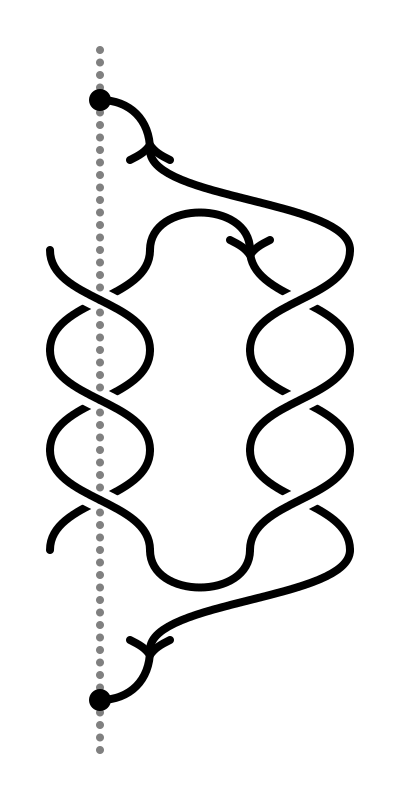

show all invariants|show all metadata
Input data and context

% 9_46-1
s.r1.x0.y2.x0.y2.x0.y2.u1
,1
% Simplifies with options '-qs' to r0.y1.r1.y2.x1.x0.x0.x1.x1.x0.x0.x1.x1.l4.y3.x5.l5.y4.y4.x6.y3.x2.y5.y4.y4.u3.y3.x0.x1.u2.u0
% Simplifies with options '-s' to r1.y2.y2.y2.r2.y1.x2.x2.u3.y0.y0.x1.u0.u0
Khovanov type D structure \(\mathrm{\widetilde{CKh}}(L)\)
options -c2-s
(diagram)
(metadata)
% file 'examples/kn/9_46-1/cxCKh-c2-s', generated by kht++ 0.1 on Mon Nov 16 05:41:49 2026 UTC
1) h^ 0 q^ 0 δ^0 ⬮
2) h^-6 q^-12 δ^0 ⬮——H—>⬮
3) h^-4 q^ -8 δ^0 ⬮——H—>⬮
4) h^-3 q^ -6 δ^0 ⬮——H—>⬮
5) h^-1 q^ -2 δ^0 ⬮——H—>⬮
Rasmussen's s-invariant
options -c2-s
(diagram)
(metadata)
% file 'examples/kn/9_46-1/cxCKh-c2-s', generated by kht++ 0.1 on Mon Nov 16 05:41:49 2026 UTC
0